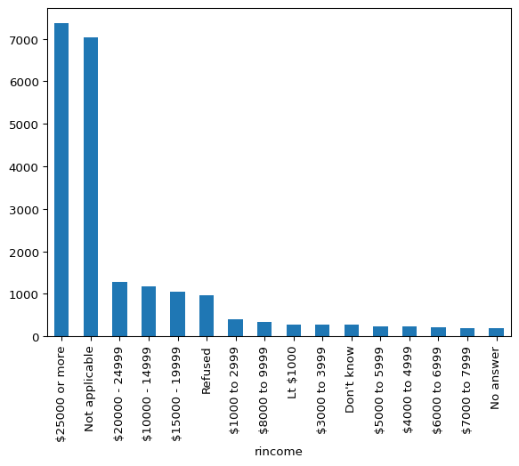
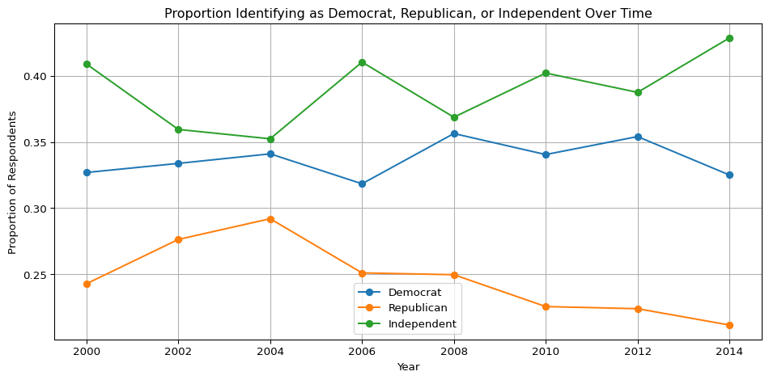
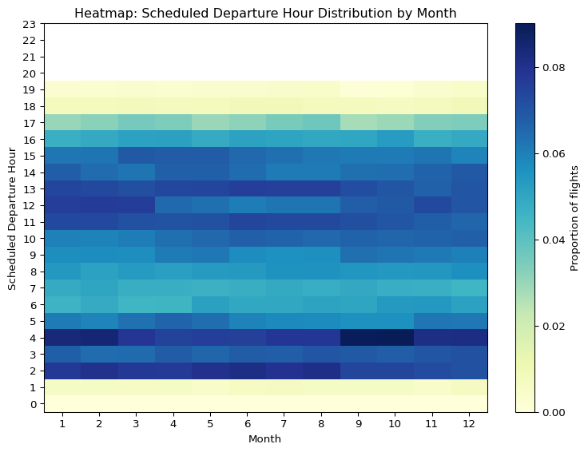
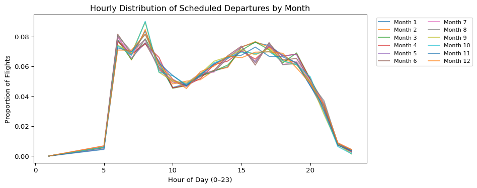
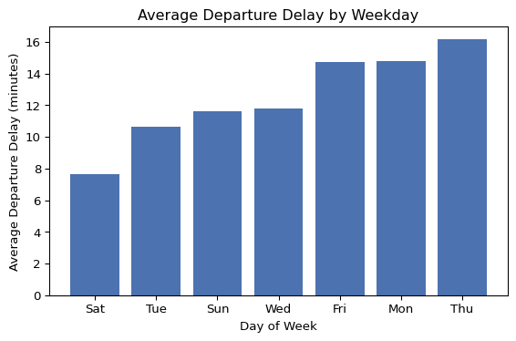

import pandas as pd
import regex as re
import numpy as np
words = pd.read_csv("https://raw.githubusercontent.com/byuidatascience/data4python4ds/refs/heads/master/data-raw/words/words.csv")
sentences = pd.read_csv("https://raw.githubusercontent.com/byuidatascience/data4python4ds/refs/heads/master/data-raw/sentences/sentences.csv")
gss_cat = pd.read_csv("https://raw.githubusercontent.com/byuidatascience/data4python4ds/refs/heads/master/data-raw/gss_cat/gss_cat.csv")
weather = pd.read_csv("https://raw.githubusercontent.com/byuidatascience/data4python4ds/refs/heads/master/data-raw/weather/weather.csv")Assignment 3, Part 2 Analysis
Part 1
words["length"] = words.name.str.len()
words["vowels"] = words.name.str.count(r"[aeiouy]")
words["vowel_prop"] = words.vowels / words.length
words| name | length | vowels | vowel_prop | |
|---|---|---|---|---|
| 0 | a | 1 | 1 | 1.000000 |
| 1 | able | 4 | 2 | 0.500000 |
| 2 | about | 5 | 3 | 0.600000 |
| 3 | absolute | 8 | 4 | 0.500000 |
| 4 | accept | 6 | 2 | 0.333333 |
| ... | ... | ... | ... | ... |
| 975 | yes | 3 | 2 | 0.666667 |
| 976 | yesterday | 9 | 5 | 0.555556 |
| 977 | yet | 3 | 2 | 0.666667 |
| 978 | you | 3 | 3 | 1.000000 |
| 979 | young | 5 | 3 | 0.600000 |
980 rows × 4 columns
max_count = words["vowels"].max()
words_with_max_vowels = words.loc[words["vowels"] == max_count, "name"].tolist()
max_prop = words["vowel_prop"].max()
words_with_max_prop = words.loc[words["vowel_prop"] == max_prop, "name"].tolist()
print("Part 1 - Q1:")
print(f"Most vowels (count = {max_count}): {words_with_max_vowels}")
print(f"Highest vowel proportion (ratio = {max_prop:.3f}): {words_with_max_prop}")Part 1 - Q1:
Most vowels (count = 5): ['appropriate', 'associate', 'authority', 'available', 'colleague', 'encourage', 'experience', 'individual', 'opportunity', 'television', 'university', 'yesterday']
Highest vowel proportion (ratio = 1.000): ['a', 'eye', 'you']Part 1 - Q2:
W = words["name"]
# (a) Start with "y": ^y
starts_with_y = W.str.contains(r"^y", flags=re.IGNORECASE)
# (b) Don't start with "y": ^(?!y)
not_start_y = W.str.contains(r"^(?!y)", flags=re.IGNORECASE)
# (c) End with "x": x$
ends_with_x = W.str.contains(r"x$", flags=re.IGNORECASE)
# (d) Exactly three letters long: ^[A-Za-z]{3}$
exactly_three = W.str.contains(r"^[A-Za-z]{3}$")
# (e) Seven letters or more: ^[A-Za-z]{7,}$
seven_or_more = W.str.contains(r"^[A-Za-z]{7,}$")
# (f) Contain a vowel-consonant pair: [aeiou][^aeiou]
vowel_cons_pair = W.str.contains(r"[aeiou][^aeiou]", flags=re.IGNORECASE)
# (g) At least two vowel-consonant pairs in a row: (?:[aeiou][^aeiou]){2}
two_pairs = W.str.contains(r"(?:[aeiou][^aeiou]){2}", flags=re.IGNORECASE)
# (h) Only consist of repeated vowel-consonant pairs: ^(?:[aeiou][^aeiou])+$
only_vc_repeats = W.str.contains(r"^(?:[aeiou][^aeiou])+$", flags=re.IGNORECASE)
# Show a sample of matches for each category:
results = {
"starts_with_y": words.loc[starts_with_y, "name"].tolist()[:10],
"not_start_y": words.loc[not_start_y, "name"].tolist()[:10],
"ends_with_x": words.loc[ends_with_x, "name"].tolist()[:10],
"exactly_three": words.loc[exactly_three, "name"].tolist()[:10],
"seven_or_more": words.loc[seven_or_more, "name"].tolist()[:10],
"vowel_cons_pair": words.loc[vowel_cons_pair, "name"].tolist()[:10],
"two_pairs": words.loc[two_pairs, "name"].tolist()[:10],
"only_vc_repeats": words.loc[only_vc_repeats, "name"].tolist()[:10],
}
for key, sample in results.items():
print(f"{key} (sample 10): {sample}\n")starts_with_y (sample 10): ['year', 'yes', 'yesterday', 'yet', 'you', 'young']
not_start_y (sample 10): ['a', 'able', 'about', 'absolute', 'accept', 'account', 'achieve', 'across', 'act', 'active']
ends_with_x (sample 10): ['box', 'sex', 'six', 'tax']
exactly_three (sample 10): ['act', 'add', 'age', 'ago', 'air', 'all', 'and', 'any', 'arm', 'art']
seven_or_more (sample 10): ['absolute', 'account', 'achieve', 'address', 'advertise', 'afternoon', 'against', 'already', 'alright', 'although']
vowel_cons_pair (sample 10): ['able', 'about', 'absolute', 'accept', 'account', 'achieve', 'across', 'act', 'active', 'actual']
two_pairs (sample 10): ['absolute', 'agent', 'along', 'america', 'another', 'apart', 'apparent', 'authority', 'available', 'aware']
only_vc_repeats (sample 10): ['as', 'at', 'away', 'eleven', 'even', 'ever', 'if', 'in', 'it', 'item']
Part 1 - Q3:
# Build a set for fast lookup
word_set = set(words["name"])
def swap_ends(w: str) -> str:
if len(w) <= 1:
return w
return w[-1] + w[1:-1] + w[0]
# Compute the “swapped” word
words["swapped"] = words["name"].apply(swap_ends)
# Mark which swapped version is also in the original list
words["swapped_in_list"] = words["swapped"].isin(word_set)
# Filter down to only those rows where swapped_in_list == True
still_in_words = words.loc[words["swapped_in_list"], ["name", "swapped"]].copy()
# Display a few examples
still_in_words| name | swapped | |
|---|---|---|
| 0 | a | a |
| 35 | america | america |
| 48 | area | area |
| 208 | dad | dad |
| 212 | dead | dead |
| 213 | deal | lead |
| 214 | dear | read |
| 222 | depend | depend |
| 238 | dog | god |
| 257 | educate | educate |
| 265 | else | else |
| 267 | encourage | encourage |
| 269 | engine | engine |
| 277 | europe | europe |
| 282 | evidence | evidence |
| 284 | example | example |
| 286 | excuse | excuse |
| 287 | exercise | exercise |
| 290 | expense | expense |
| 291 | experience | experience |
| 295 | eye | eye |
| 360 | god | dog |
| 385 | health | health |
| 393 | high | high |
| 449 | knock | knock |
| 462 | lead | deal |
| 470 | level | level |
| 484 | local | local |
| 542 | nation | nation |
| 554 | no | on |
| 555 | non | non |
| 574 | on | no |
| 676 | rather | rather |
| 677 | read | dear |
| 691 | refer | refer |
| 695 | remember | remember |
| 740 | serious | serious |
| 798 | stairs | stairs |
| 851 | test | test |
| 877 | tonight | tonight |
| 887 | transport | transport |
| 889 | treat | treat |
| 893 | trust | trust |
| 957 | window | window |
| 976 | yesterday | yesterday |
Part 1 - Q4:
gss_cat["rincome"] = gss_cat["rincome"].astype("category")
gss_cat["partyid"] = gss_cat["partyid"].astype("category")
gss_cat.head(5)| year | marital | age | race | rincome | partyid | relig | denom | tvhours | |
|---|---|---|---|---|---|---|---|---|---|
| 0 | 2000 | Never married | 26.0 | White | $8000 to 9999 | Ind,near rep | Protestant | Southern baptist | 12.0 |
| 1 | 2000 | Divorced | 48.0 | White | $8000 to 9999 | Not str republican | Protestant | Baptist-dk which | NaN |
| 2 | 2000 | Widowed | 67.0 | White | Not applicable | Independent | Protestant | No denomination | 2.0 |
| 3 | 2000 | Never married | 39.0 | White | Not applicable | Ind,near rep | Orthodox-christian | Not applicable | 4.0 |
| 4 | 2000 | Divorced | 25.0 | White | Not applicable | Not str democrat | NaN | Not applicable | 1.0 |
gss_cat["rincome"].value_counts().plot(kind="bar")
The default bar chart is hard to understand because it has many categories that are long and complexm, the order is not intuitive, and the text is shown vertically. I could improve the plot by changing to horizontal/diagonal x-axis labels, making the brackets appear in ascending order with non-number categories placed ath tend, and potentially grouping non-response codes into a single bar (refused, no answer) for visual clarity.
Part 1 - Q5:
def simplify_party(pid: str) -> str:
pid_lower = pid.lower()
if "democrat" in pid_lower:
return "Democrat"
elif "republican" in pid_lower:
return "Republican"
elif "independent" in pid_lower or pid_lower.startswith("ind"):
return "Independent"
else:
return "Other"
gss_cat["party_simp"] = gss_cat["partyid"].apply(simplify_party)import matplotlib.pyplot as plt
# 4. For plotting, keep only Democrat, Republican, Independent
gss_filtered = gss_cat[gss_cat["party_simp"].isin(["Democrat", "Republican", "Independent"])]
# 5. Compute counts per year and party
counts = (
gss_filtered
.groupby(["year", "party_simp"])
.size()
.reset_index(name="count")
)
# 6. Compute total respondents per year (including all categories)
total_per_year = gss_cat.groupby("year").size().reset_index(name="total")
# 7. Merge counts with total to get proportions
counts = counts.merge(total_per_year, on="year")
counts["proportion"] = counts["count"] / counts["total"]
# 8. Pivot so that each party is a column
pivot = counts.pivot(index="year", columns="party_simp", values="proportion")
# 9. Plot the proportions over time using matplotlib
plt.figure(figsize=(10, 5))
for party in ["Democrat", "Republican", "Independent"]:
if party in pivot.columns:
plt.plot(pivot.index, pivot[party], marker='o', label=party)
plt.xlabel("Year")
plt.ylabel("Proportion of Respondents")
plt.title("Proportion Identifying as Democrat, Republican, or Independent Over Time")
plt.legend()
plt.grid(True)
plt.tight_layout()
plt.show()
Ans: the amount of Republicans has declined over time, Independent has slightly increased, and Democrat has stayed relatively the same.
Part 1 - Q6:
from datetime import datetime
# The raw strings
d1 = "January 1, 2010"
d2 = "2015-Mar-07"
d3 = "06-Jun-2017"
d4 = "August 19 (2015)"
d5 = "12/30/14" # should become 2014-12-30
t1 = "1705" # meaning 17:05:00
t2 = "11:15:10.12 PM" # meaning 23:15:10.120000
# 1) d1: "January 1, 2010" → format "%B %d, %Y"
dt1 = datetime.strptime(d1, "%B %d, %Y")
# dt1 == datetime(2010, 1, 1, 0, 0, 0)
# 2) d2: "2015-Mar-07" → format "%Y-%b-%d"
dt2 = datetime.strptime(d2, "%Y-%b-%d")
# dt2 == datetime(2015, 3, 7, 0, 0, 0)
# 3) d3: "06-Jun-2017" → format "%d-%b-%Y"
dt3 = datetime.strptime(d3, "%d-%b-%Y")
# dt3 == datetime(2017, 6, 6, 0, 0, 0)
# 4) d4: "August 19 (2015)" → first strip “(” and “)”, then parse "%B %d %Y"
d4_clean = d4.replace("(", "").replace(")", "")
dt4 = datetime.strptime(d4_clean, "%B %d %Y")
# dt4 == datetime(2015, 8, 19, 0, 0, 0)
# 5) d5: "12/30/14" → format "%m/%d/%y" (two-digit year → 2014)
dt5 = datetime.strptime(d5, "%m/%d/%y")
# dt5 == datetime(2014, 12, 30, 0, 0, 0)
# 6) t1: "1705" → format "%H%M" (24-hour, no separators)
time1 = datetime.strptime(t1, "%H%M").time()
# time1 == datetime.time(17, 5, 0)
# 7) t2: "11:15:10.12 PM" → format "%I:%M:%S.%f %p"
# Note: “10.12” in seconds means 10 seconds + 120 000 microseconds
dt_temp = datetime.strptime(t2, "%I:%M:%S.%f %p")
time2 = dt_temp.time()
# time2 == datetime.time(23, 15, 10, 120000)
# Print results to confirm
print("d1 →", dt1) # 2010-01-01 00:00:00
print("d2 →", dt2) # 2015-03-07 00:00:00
print("d3 →", dt3) # 2017-06-06 00:00:00
print("d4 →", dt4) # 2015-08-19 00:00:00
print("d5 →", dt5) # 2014-12-30 00:00:00
print("t1 →", time1) # 17:05:00
print("t2 →", time2) # 23:15:10.120000d1 → 2010-01-01 00:00:00
d2 → 2015-03-07 00:00:00
d3 → 2017-06-06 00:00:00
d4 → 2015-08-19 00:00:00
d5 → 2014-12-30 00:00:00
t1 → 17:05:00
t2 → 23:15:10.120000Part 1 - Q7:
flights = pd.read_csv(
"https://raw.githubusercontent.com/byuidatascience/data4python4ds/refs/heads/master/data-raw/flights/flights.csv"
)print(flights.columns.tolist())
print(weather.columns.tolist())['year', 'month', 'day', 'dep_time', 'sched_dep_time', 'dep_delay', 'arr_time', 'sched_arr_time', 'arr_delay', 'carrier', 'flight', 'tailnum', 'origin', 'dest', 'air_time', 'distance', 'hour', 'minute', 'time_hour']
['origin', 'year', 'month', 'day', 'hour', 'temp', 'dewp', 'humid', 'wind_dir', 'wind_speed', 'wind_gust', 'precip', 'pressure', 'visib', 'time_hour']# 7.1.1 Extract the "scheduled hour" from sched_dep_time
def sched_hour(x):
if pd.isna(x):
return np.nan
s = f"{int(x):04d}" # zero-pad to length 4, e.g. 530 -> "0530"
return int(s[:2]) # first two chars are the hour
flights["sched_hour"] = flights["sched_dep_time"].apply(sched_hour)
# 7.1.2 Drop any rows without a valid sched_hour or month
flt = flights.dropna(subset=["sched_hour", "month"])
# 7.1.3 Count flights by (month, sched_hour)
month_hour = (
flt.groupby(["month", "sched_hour"])
.size()
.reset_index(name="n_flights")
)
# 7.1.4 Compute proportion of flights in each hour, per month
month_hour["prop"] = (
month_hour.groupby("month")["n_flights"]
.transform(lambda x: x / x.sum())
)
# 7.1.5 Pivot to a matrix: rows = sched_hour, cols = month, values = prop
pivot_mh = month_hour.pivot(
index="sched_hour", columns="month", values="prop"
).fillna(0)
# 7.1.6 Plot a heatmap of proportions (sched_hour on y-axis, month on x-axis)
plt.figure(figsize=(8, 6))
plt.imshow(pivot_mh, origin="lower", aspect="auto", cmap="YlGnBu")
plt.colorbar(label="Proportion of flights")
plt.xticks(ticks=np.arange(12), labels=np.arange(1, 13))
plt.yticks(ticks=np.arange(24), labels=np.arange(0, 24))
plt.xlabel("Month")
plt.ylabel("Scheduled Departure Hour")
plt.title("Heatmap: Scheduled Departure Hour Distribution by Month")
plt.tight_layout()
plt.show()
# 7.1.7 Overlay line plots: one line per month
plt.figure(figsize=(10, 4))
for m in pivot_mh.columns:
plt.plot(
pivot_mh.index,
pivot_mh[m],
label=f"Month {m}",
alpha=0.7
)
plt.xlabel("Hour of Day (0–23)")
plt.ylabel("Proportion of Flights")
plt.title("Hourly Distribution of Scheduled Departures by Month")
plt.legend(ncol=2, bbox_to_anchor=(1.02, 1), loc="upper left", fontsize="small")
plt.tight_layout()
plt.show()

7.1 We see although no large difference, there are more flights departing at 4 am in Sept/Oct and Jan/Feb, less flghts departing at 2 am from Sept to Dec. Sept to Dec flight depatures from 9 am to 3 pm are split more evenly, whereas for other months there is more concentration on certain hours.
# 7.2.1 Build a proper date column from year, month, day
flights["date"] = pd.to_datetime(flights[["year", "month", "day"]])
# 7.2.2 Extract weekday: Monday=0 … Sunday=6
flights["weekday"] = flights["date"].dt.weekday
# 7.2.3 Drop flights without dep_delay or weekday
df_delay = flights.dropna(subset=["dep_delay", "weekday"])
# 7.2.4 Compute average and median departure delay per weekday
wk_stats = (
df_delay.groupby("weekday")["dep_delay"]
.agg(avg_delay="mean", med_delay="median")
.reset_index()
)
# 7.2.5 Add a “weekday_name” column for readability
wk_stats["weekday_name"] = wk_stats["weekday"].map({
0: "Mon", 1: "Tue", 2: "Wed", 3: "Thu", 4: "Fri", 5: "Sat", 6: "Sun"
})
# 7.2.6 Sort by average delay
wk_stats = wk_stats.sort_values("avg_delay").reset_index(drop=True)
print(wk_stats)
# 7.2.7 Plot average departure delay by weekday
plt.figure(figsize=(6, 4))
plt.bar(wk_stats["weekday_name"], wk_stats["avg_delay"], color="#4C72B0")
plt.xlabel("Day of Week")
plt.ylabel("Average Departure Delay (minutes)")
plt.title("Average Departure Delay by Weekday")
plt.tight_layout()
plt.show() weekday avg_delay med_delay weekday_name
0 5 7.650502 -2.0 Sat
1 1 10.631683 -2.0 Tue
2 6 11.589532 -2.0 Sun
3 2 11.803512 -2.0 Wed
4 4 14.696057 -1.0 Fri
5 0 14.778937 -1.0 Mon
6 3 16.148920 -1.0 Thu
7.2 Assume we want to minimize departure delay, then leave on Saturday.
dest_counts = flights["dest"].value_counts().reset_index()
dest_counts.columns = ["dest", "n_flights"]
top10_dest_df = dest_counts.head(10)[["dest"]].copy()
flights_top10 = flights.merge(top10_dest_df, on="dest", how="inner")
print("7.3")
flights_top107.3| year | month | day | dep_time | sched_dep_time | dep_delay | arr_time | sched_arr_time | arr_delay | carrier | ... | origin | dest | air_time | distance | hour | minute | time_hour | sched_hour | date | weekday | |
|---|---|---|---|---|---|---|---|---|---|---|---|---|---|---|---|---|---|---|---|---|---|
| 0 | 2013 | 1 | 1 | 542.0 | 540 | 2.0 | 923.0 | 850 | 33.0 | AA | ... | JFK | MIA | 160.0 | 1089 | 5 | 40 | 2013-01-01T10:00:00Z | 5 | 2013-01-01 | 1 |
| 1 | 2013 | 1 | 1 | 554.0 | 600 | -6.0 | 812.0 | 837 | -25.0 | DL | ... | LGA | ATL | 116.0 | 762 | 6 | 0 | 2013-01-01T11:00:00Z | 6 | 2013-01-01 | 1 |
| 2 | 2013 | 1 | 1 | 554.0 | 558 | -4.0 | 740.0 | 728 | 12.0 | UA | ... | EWR | ORD | 150.0 | 719 | 5 | 58 | 2013-01-01T10:00:00Z | 5 | 2013-01-01 | 1 |
| 3 | 2013 | 1 | 1 | 555.0 | 600 | -5.0 | 913.0 | 854 | 19.0 | B6 | ... | EWR | FLL | 158.0 | 1065 | 6 | 0 | 2013-01-01T11:00:00Z | 6 | 2013-01-01 | 1 |
| 4 | 2013 | 1 | 1 | 557.0 | 600 | -3.0 | 838.0 | 846 | -8.0 | B6 | ... | JFK | MCO | 140.0 | 944 | 6 | 0 | 2013-01-01T11:00:00Z | 6 | 2013-01-01 | 1 |
| ... | ... | ... | ... | ... | ... | ... | ... | ... | ... | ... | ... | ... | ... | ... | ... | ... | ... | ... | ... | ... | ... |
| 141140 | 2013 | 9 | 30 | 2149.0 | 2156 | -7.0 | 2245.0 | 2308 | -23.0 | UA | ... | EWR | BOS | 37.0 | 200 | 21 | 56 | 2013-10-01T01:00:00Z | 21 | 2013-09-30 | 0 |
| 141141 | 2013 | 9 | 30 | 2233.0 | 2113 | 80.0 | 112.0 | 30 | 42.0 | UA | ... | EWR | SFO | 318.0 | 2565 | 21 | 13 | 2013-10-01T01:00:00Z | 21 | 2013-09-30 | 0 |
| 141142 | 2013 | 9 | 30 | 2235.0 | 2001 | 154.0 | 59.0 | 2249 | 130.0 | B6 | ... | JFK | MCO | 123.0 | 944 | 20 | 1 | 2013-10-01T00:00:00Z | 20 | 2013-09-30 | 0 |
| 141143 | 2013 | 9 | 30 | 2307.0 | 2255 | 12.0 | 2359.0 | 2358 | 1.0 | B6 | ... | JFK | BOS | 33.0 | 187 | 22 | 55 | 2013-10-01T02:00:00Z | 22 | 2013-09-30 | 0 |
| 141144 | 2013 | 9 | 30 | NaN | 1455 | NaN | NaN | 1634 | NaN | 9E | ... | JFK | DCA | NaN | 213 | 14 | 55 | 2013-09-30T18:00:00Z | 14 | 2013-09-30 | 0 |
141145 rows × 22 columns
# 7.4.1 Helper: extract departure hour from dep_time
def dep_hour(x):
if pd.isna(x):
return np.nan
s = f"{int(x):04d}"
return int(s[:2])
flights["dep_hour"] = flights["dep_time"].apply(dep_hour)
# 7.4.2 Drop flights with missing arr_delay or dep_hour
fh = flights.dropna(subset=["arr_delay", "dep_hour"])
# 7.4.3 Group by (year, month, day, dep_hour) to compute average arrival delay
hourly_delays = (
fh
.groupby(["year", "month", "day", "dep_hour"])["arr_delay"]
.agg(avg_arr_delay="mean", n_flights="size")
.reset_index()
)
# 7.4.4 Take the top 48 hours by average arrival delay
top48 = hourly_delays.sort_values("avg_arr_delay", ascending=False).head(48)
# 7.4.5 Aggregate weather across origins so each hour‐bin is unique
weather_agg = (
weather
.groupby(["year", "month", "day", "hour"])
.agg({
"precip": "mean",
"visib": "mean",
"wind_speed": "mean",
"temp": "mean"
})
.reset_index()
)
# 7.4.6 Merge top48 with aggregated weather on matching (year, month, day, hour)
top48_weather = top48.merge(
weather_agg,
left_on=["year", "month", "day", "dep_hour"],
right_on=["year", "month", "day", "hour"],
how="left"
)
# 7.4.7 Show results
cols_to_show = [
"year", "month", "day", "dep_hour", "avg_arr_delay",
"precip", "visib", "wind_speed", "temp"
]
print(top48_weather[cols_to_show].head(10))
print("\nDescriptive stats for weather during these top-48 hours:")
print(top48_weather[["precip", "visib", "wind_speed"]].describe()) year month day dep_hour avg_arr_delay precip visib wind_speed \
0 2013 12 17 3.0 493.0 0.0 10.000000 5.370307
1 2013 5 23 1.0 461.0 0.0 9.000000 8.822647
2 2013 5 1 0.0 408.0 0.0 10.000000 1.150780
3 2013 12 29 24.0 397.0 NaN NaN NaN
4 2013 5 19 2.0 385.0 0.0 9.000000 10.357020
5 2013 3 17 23.0 364.0 0.0 10.000000 9.973427
6 2013 4 10 3.0 359.0 0.0 10.000000 9.973427
7 2013 3 12 1.0 356.0 0.0 10.000000 13.809360
8 2013 7 10 3.0 354.0 0.0 8.333333 5.753900
9 2013 5 23 2.0 331.0 0.0 8.666667 10.357020
temp
0 26.66
1 67.88
2 50.30
3 NaN
4 57.32
5 34.04
6 59.96
7 48.98
8 74.96
9 66.68
Descriptive stats for weather during these top-48 hours:
precip visib wind_speed
count 46.000000 46.000000 46.000000
mean 0.006014 8.974638 8.580816
std 0.031884 2.187215 4.237975
min 0.000000 2.166667 1.150780
25% 0.000000 9.333333 5.370307
50% 0.000000 10.000000 8.630850
75% 0.000000 10.000000 10.644715
max 0.210000 10.000000 19.179667I would expect that most of these 48 “worst‐delay” hours coincide with elevated precipitation, low visibility, or high winds, confirming the expected weather‐delay patterns.
Part 1 - Q8:
Ans: 1. dplyr::distinct() (or pandas’ drop_duplicates()) translates to using SELECT DISTINCT … in SQL. 2. head(n) in dplyr or pandas—meaning “take the first n rows”—translates to a LIMIT (or vendor-specific equivalent) clause in SQL.
Part 2
import pandas as pd
from lets_plot import *
LetsPlot.setup_html()
# Loading the NBA 2019 dataset
url = "https://raw.githubusercontent.com/dataprofessor/data/master/nba-player-stats-2019.csv"
df = pd.read_csv(url)
print(df.shape)
df.head()(708, 29)| Player | Pos | Age | Tm | G | GS | MP | FG | FGA | FG% | ... | FT% | ORB | DRB | TRB | AST | STL | BLK | TOV | PF | PTS | |
|---|---|---|---|---|---|---|---|---|---|---|---|---|---|---|---|---|---|---|---|---|---|
| 0 | Álex Abrines | SG | 25 | OKC | 31 | 2 | 19.0 | 1.8 | 5.1 | 0.357 | ... | 0.923 | 0.2 | 1.4 | 1.5 | 0.6 | 0.5 | 0.2 | 0.5 | 1.7 | 5.3 |
| 1 | Quincy Acy | PF | 28 | PHO | 10 | 0 | 12.3 | 0.4 | 1.8 | 0.222 | ... | 0.700 | 0.3 | 2.2 | 2.5 | 0.8 | 0.1 | 0.4 | 0.4 | 2.4 | 1.7 |
| 2 | Jaylen Adams | PG | 22 | ATL | 34 | 1 | 12.6 | 1.1 | 3.2 | 0.345 | ... | 0.778 | 0.3 | 1.4 | 1.8 | 1.9 | 0.4 | 0.1 | 0.8 | 1.3 | 3.2 |
| 3 | Steven Adams | C | 25 | OKC | 80 | 80 | 33.4 | 6.0 | 10.1 | 0.595 | ... | 0.500 | 4.9 | 4.6 | 9.5 | 1.6 | 1.5 | 1.0 | 1.7 | 2.6 | 13.9 |
| 4 | Bam Adebayo | C | 21 | MIA | 82 | 28 | 23.3 | 3.4 | 5.9 | 0.576 | ... | 0.735 | 2.0 | 5.3 | 7.3 | 2.2 | 0.9 | 0.8 | 1.5 | 2.5 | 8.9 |
5 rows × 29 columns
Part 2 - 1.1: Yes, the data is already tidy because: * Each row = one observation (one player‐season) * Each column = one variable (age, team, PTS, etc.) * Each cell = one value
Part 2 - 1.2: The data is initially in WIDE format where there is one observation unit per row and stats are columns. We’ll now convert it to LONG.
# These columns collectively identify each player‐season:
id_vars = ["Player"]
# Everything else (all per‐game stats, percentages, etc.) we’ll treat as measurement variables:
value_vars = [c for c in df.columns if c not in id_vars]df.columnsIndex(['Player', 'Pos', 'Age', 'Tm', 'G', 'GS', 'MP', 'FG', 'FGA', 'FG%', '3P',
'3PA', '3P%', '2P', '2PA', '2P%', 'eFG%', 'FT', 'FTA', 'FT%', 'ORB',
'DRB', 'TRB', 'AST', 'STL', 'BLK', 'TOV', 'PF', 'PTS'],
dtype='object')long = df.melt(
id_vars=id_vars,
value_vars=value_vars,
var_name="Stat",
value_name="Value"
)
# Inspect the first few rows:
long.head<bound method NDFrame.head of Player Stat Value
0 Álex Abrines Pos SG
1 Quincy Acy Pos PF
2 Jaylen Adams Pos PG
3 Steven Adams Pos C
4 Bam Adebayo Pos C
... ... ... ...
19819 Tyler Zeller PTS 11.5
19820 Ante Žižić PTS 7.8
19821 Ivica Zubac PTS 8.9
19822 Ivica Zubac PTS 8.5
19823 Ivica Zubac PTS 9.4
[19824 rows x 3 columns]>Part 2 - 2.1
df["Player"] = df["Player"].str.replace(
r"(\w+)$", # capture the final “word” (surname)
lambda m: m.group(1).upper(), # replace it with its .upper() version
regex=True
)
df["Player"].head(5)0 Álex ABRINES
1 Quincy ACY
2 Jaylen ADAMS
3 Steven ADAMS
4 Bam ADEBAYO
Name: Player, dtype: objectPart 2 - 2.2: N/A - The NBA data has no date/time columns
Part 2 - 2.3
The only “missing” (NaN) values appear in percentage columns whenever the player had zero attempts for that category.
For example: FG% (field‐goal %) is NaN if FGA (field‐goal attempts per game) = 0 (i.e., the player never attempted a field goal).
Because percentages are computed as “made ÷ attempted,” a zero in the denominator produces NaN.
Part 2 - 2.4
# (1) Build two boolean masks:
young_mask = df["Age"] < 25
high_scoring_mask = df["PTS"] >= 20
# (2) Combine them with & (AND) to get players satisfying both:
filtered = df[ young_mask & high_scoring_mask ]
filtered[["Player", "Age", "Tm", "PTS"]]| Player | Age | Tm | PTS | |
|---|---|---|---|---|
| 19 | Giannis ANTETOKOUNMPO | 24 | MIL | 27.7 |
| 68 | Devin BOOKER | 22 | PHO | 26.6 |
| 181 | Luka DONČIĆ | 19 | DAL | 21.2 |
| 200 | Joel EMBIID | 24 | PHI | 27.5 |
| 353 | Nikola JOKIĆ | 23 | DEN | 20.1 |
| 388 | Zach LAVINE | 23 | CHI | 23.7 |
| 469 | Donovan MITCHELL | 22 | UTA | 23.8 |
| 554 | Julius RANDLE | 24 | NOP | 21.4 |
| 573 | D'Angelo RUSSELL | 22 | BRK | 21.1 |
| 647 | Karl-Anthony TOWNS | 23 | MIN | 24.4 |
References
OpenAI. (2023). ChatGPT (June 16 version) [Large language model]. https://chat.openai.com/chat